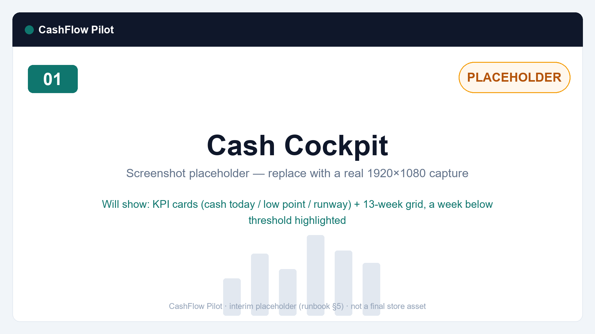
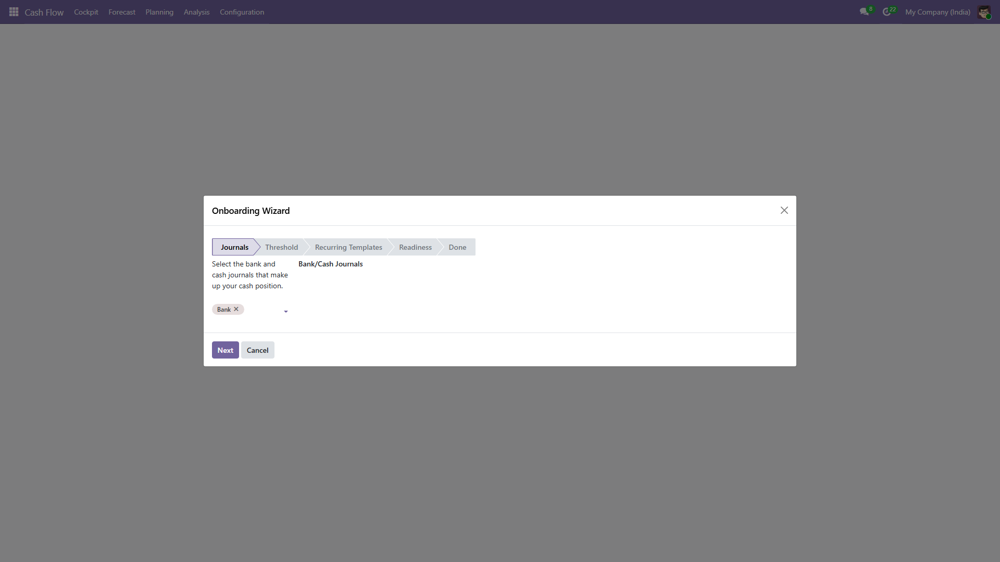
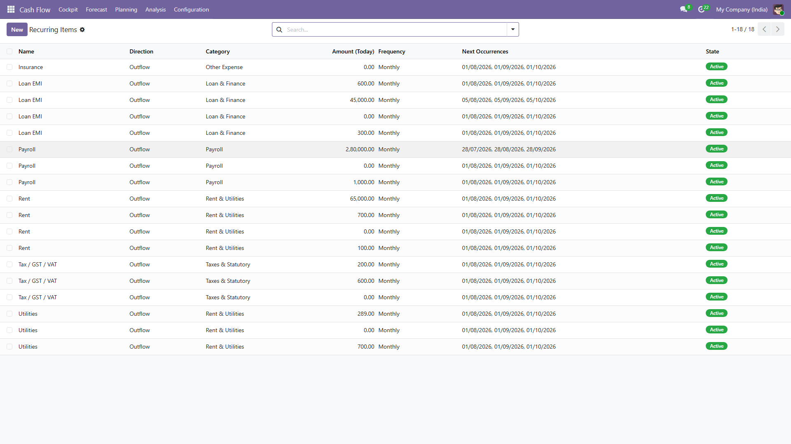
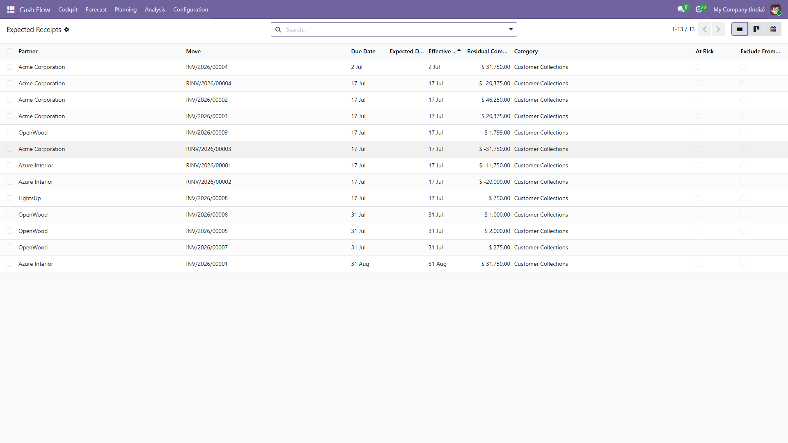
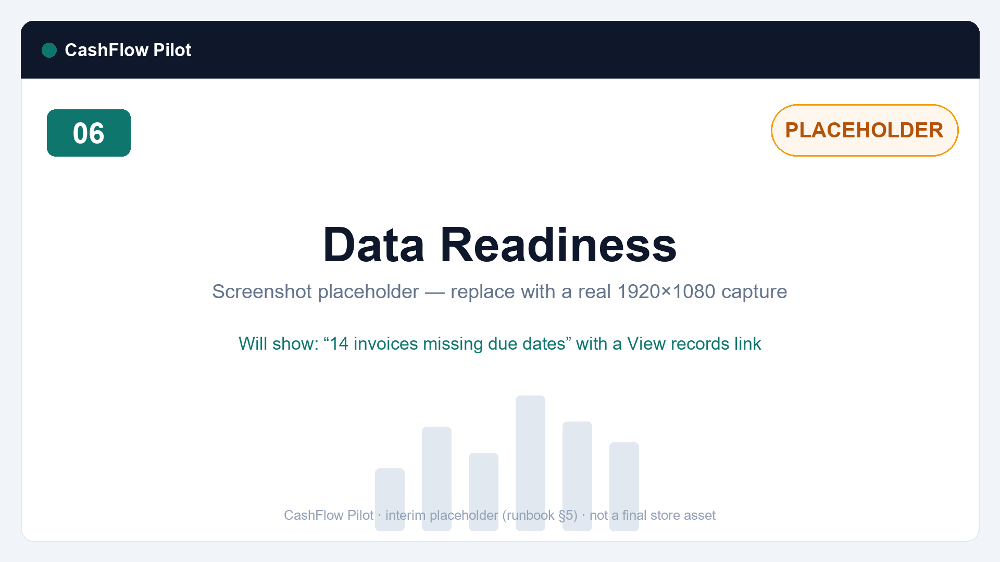
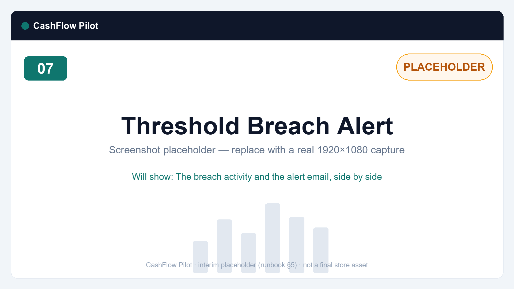

The rolling cash flow forecast Odoo never shipped — built automatically from the invoices, bills and bank balances already in your database. Your Monday spreadsheet retires today.
Every week, someone exports AR/AP aging to Excel, rebuilds the cash sheet by hand, and hopes nothing was missed. It is stale by Wednesday, it trusts due dates nobody pays on, and it forgets payroll, rent and tax — the biggest outflows of all. CashFlow Pilot replaces that ritual with a live forecast inside Odoo.
The Cash Cockpit shows today's position, a 13-week grid of inflows, outflows and closing balances, and the one number an owner checks weekly — the projected low point, with the week it lands. Weeks below your minimum-cash threshold are flagged instantly.

Click any cell and see exactly which invoices, bills and planned items make it up — the drill-down total always reconciles to the cell. Adjust an expected receipt or payment date inline and the grid recalculates immediately. Your accounting documents are never modified.
No chart-of-account mapping. No forecast-type setup. The wizard confirms your bank and cash journals, asks for your minimum cash threshold, helps you add recurring commitments from templates — and your forecast is live.

Payroll, rent, GST/VAT, loan EMIs, utilities, insurance — recurring commitments live outside AR/AP, which is exactly why cash crunches surprise people. Register them once; CashFlow Pilot projects every occurrence across the horizon, with effective-dated amount revisions and full history.

Expected Receipts and Expected Payments views organize open documents by week. Flag disputed invoices as at-risk (and exclude them from the closing balance), schedule follow-up calls, and re-sequence vendor payments by editing expected dates — every change logged with user and timestamp.

The Data Readiness check flags invoices without due dates, stale bank journals and missing exchange rates — with one-click links to fix them. And when a projected week dips below your threshold, you get exactly one alert (activity + email). No daily nagging.


|
Read-only. Guaranteed. Never creates, edits or deletes journal entries, invoices, bills or reconciliations. Ever. |
Private by design. All computation inside your database. No external calls, no telemetry. |
Fully audited. Every manual adjustment logged — who, when, old and new value. |
| Capability | Free | Pro |
|---|---|---|
| 13-week grid, 12-month view, cockpit, drill-down, Excel export | ✔ | ✔ |
| Recurring & one-off cash items, threshold alerts, at-risk flags | ✔ | ✔ |
| Payment-behavior dates (forecast on how customers actually pay) | — | ✔ |
| What-if scenarios with side-by-side comparison | — | ✔ |
| Sales/Purchase pipeline layering, forecast-vs-actual accuracy | — | ✔ |
| Multi-company consolidation, weekly digest, board-pack PDF | — | ✔ |
Search "CashFlow Pilot Pro" on the Odoo Apps Store to upgrade.
1. Install from the Apps menu · 2. Run the 10-minute wizard · 3. Share the cockpit with your owner
Does it work on Odoo Community?
Yes — fully. No Enterprise modules required, on Odoo 19.
Will it touch my accounting?
No. It is strictly read-only toward accounting data. Expected dates and planning items live in the app's own models.
Where do the numbers come from?
Bank/cash journal balances, posted customer invoices and vendor bills at their outstanding (residual) value, plus the recurring and one-off items you register.
Is this a cash flow statement?
No — statements look backward. CashFlow Pilot looks forward: week by week, for the next 13 weeks.
Multi-currency? Multi-company?
Multi-currency is supported in Free (converted at your company rates). Consolidated multi-company views are a Pro feature.
Does any data leave my server?
Never. No external calls, no telemetry.
Questions or ideas? novaerp.labs@gmail.com · Documentation included in-app · We support each new Odoo version within 60 days of release.